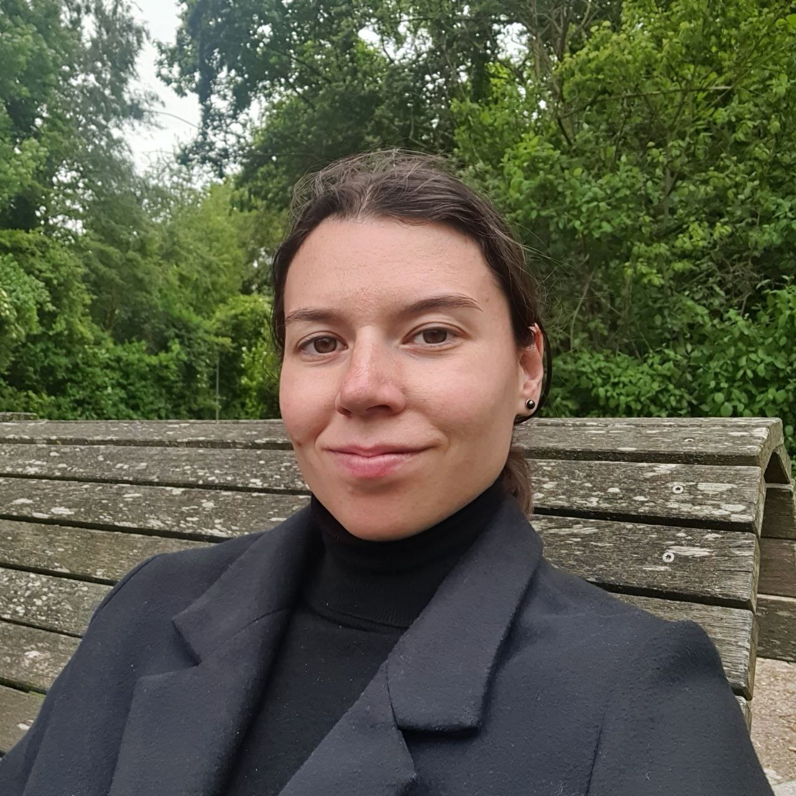
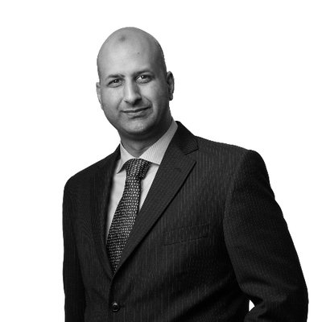
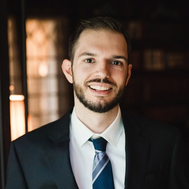
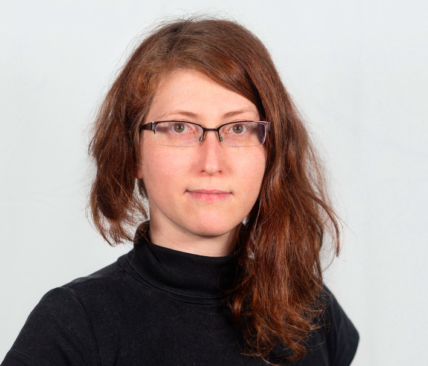
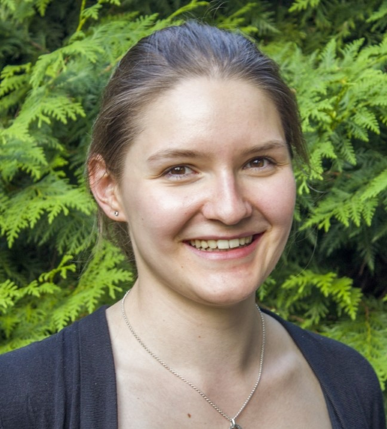
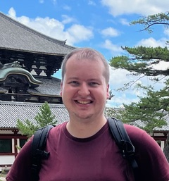
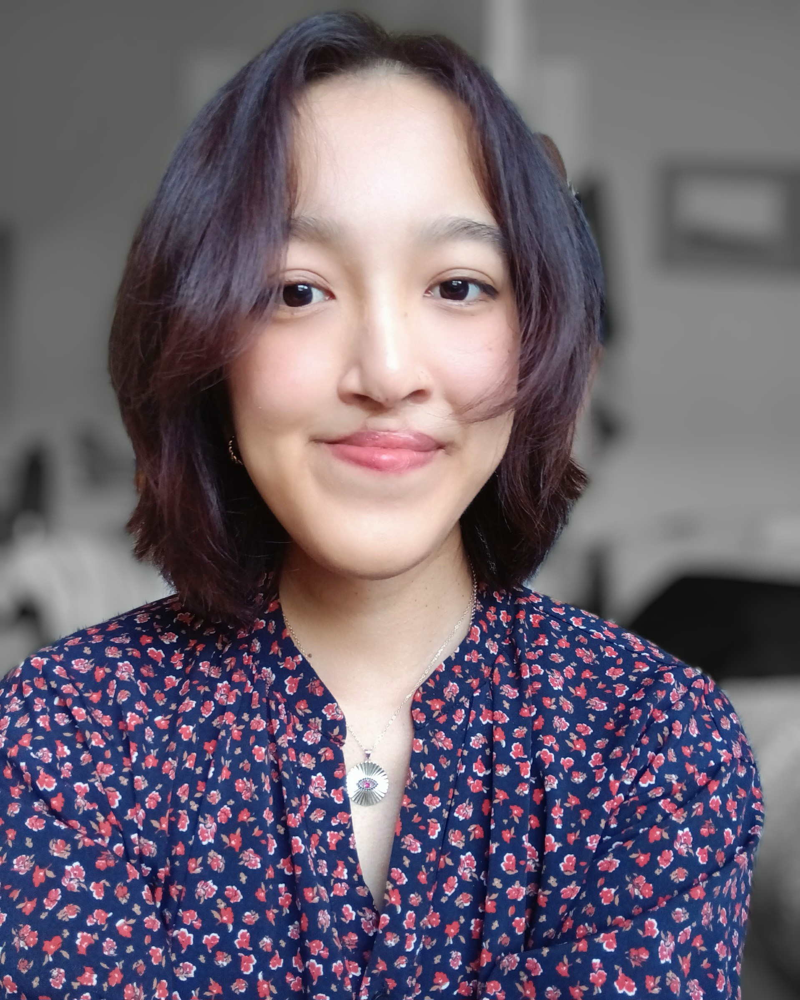
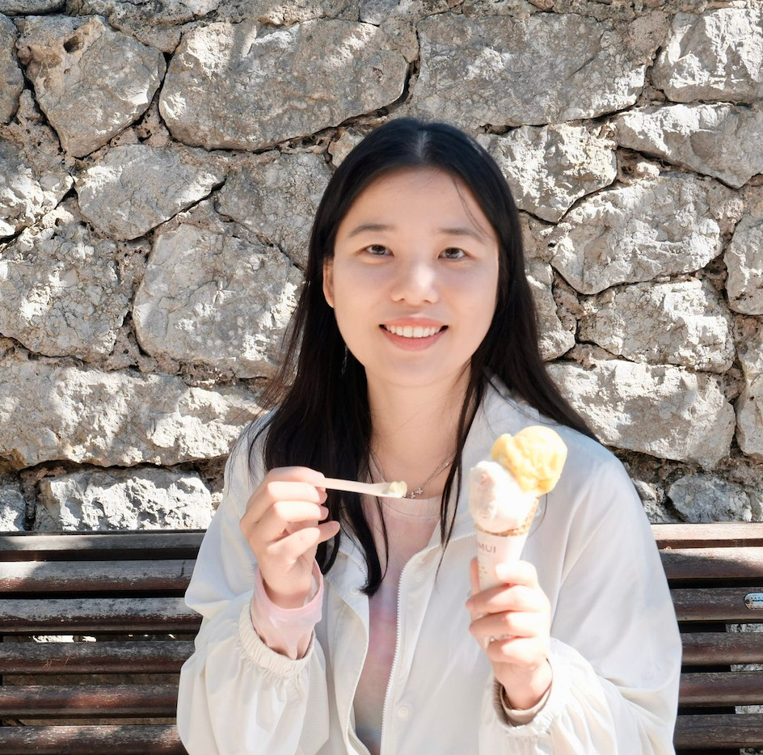

YNLG 2026
The 2nd Workshop for Young Researchers in Natural Language Generation
October 17-21, 2026 • Utrecht, the Netherlands • Part of INLG 2026
Venue: Spoorwegmuseum (The Railway Museum), room Restauratiezaal
Registration links
Mentorship registration form.
Looking for career advice or eager to share guidance with the next generation? Sign up for our Pop-Up Mentorship. We match mentors and mentees for a single, low-commitment, informal chat during the conference.
Poster registration.
Are you a student presenting work at the main INLG 2026 conference? Give your research an extra audience at the YNLG poster session. Space is limited.
Hackathon task collection document.
Do you have a project idea, an open research question, a funky dataset, or a prototype you want to explore with fellow researchers? Anyone attending Day 2 can propose a task. Or just sign up for a preferred project.
📅 Important Dates
- Submissions due:
August 13, 2026 - Notification:
September 1, 2026 - Camera-ready:
September 16, 2026 - Workshop:
October 17-21, 2026 (exact date tbd)
🎯 Target Audience
Early-career researchers including:
- PhD students
- Master's students
- Postdocs new to NLG
📝 Submission Format
2-page position papers including:
- Research overview
- Short biography
- Questions for seniors
- Roundtable topics
About YNLG 2026
YNLG aims to foster a welcoming community of early-career researchers in NLG by providing a platform for PhD students and Master's students to present work-in-progress research, receive feedback from senior researchers and peers, and engage in discussions about current trends and future directions in Natural Language Generation.
The workshop is organized under the auspices of the Special Interest Group on Natural Language Generation (SIGGEN) of the Association for Computational Linguistics (ACL). YNLG 2026 will take place during INLG 2026 in Utrecht, the Netherlands.
Workshop Format
YNLG 2026 will be a two-day, in-person workshop featuring:
- Day 1: Workshop featuring poster sessions, keynote talks, and roundtable discussions.
- Day 2: Hackathon for collaborative research and coding projects.
- Poster Sessions or Lightning Talks: Two sessions where participants present their submissions and engage with fellow researchers
- Keynote Talks: Daryna Dementieva, Saad Mahamood, Sebastian Gehrmann
- Interactive Roundtables: Small-group discussions on both research topics and practical aspects of academic life
- Networking Social Event: An informal evening event with sightseeing and dinner
We would like to highlight that we do not have any funding for covering the participants' travel. Each participant is responsible for securing their own funding to attend the workshop.
Hackathon
Do you have an idea for the hackaton? We collect proposed tasks in the Hackathon Tasks Google Doc.
More details will be shared later.
Call for Papers
We invite early-career researchers to submit position papers to the first Workshop for Young Researchers in Natural Language Generation (YNLG 2026), to be held as part of INLG 2026 in Utrecht, the Netherlands.
YNLG aims to foster a welcoming community of early-career researchers in NLG by providing a platform for PhD students and Master's students to present work-in-progress research, receive feedback from senior researchers and peers, and engage in discussions about current trends and future directions in Natural Language Generation.
The workshop is organized under the auspices of the Special Interest Group on Natural Language Generation (SIGGEN) of the Association for Computational Linguistics (ACL). YNLG 2026 will take place during INLG 2026 (October 17 - 21, 2026).
Important Dates
All deadlines are at 11:59 PM, UTC-12 (anywhere on Earth).
- Submissions due:
August 13, 2026 - Notification:
September 1, 2026 - Camera-ready:
September 16, 2026 - Workshop:
October 17-18, 2026
Submission Format
Position Papers
We invite 2-page position papers (+ unlimited references) that should include:
- Research Overview: A description of your past, present, and future research plans in NLG
- Short Biography: A brief academic biography highlighting your background and research interests
- Questions for Senior Researchers: Specific questions you would like to ask senior researchers. These can be related to research or the general PhD experience and future careers. We will anonymize and aggregate these questions and release the answers for all of them with the proceedings of the workshop.
- Topics for Roundtable Discussions with Peers: Suggestions for topics you would like to see discussed during the workshop's interactive roundtable sessions
The position paper format is designed to facilitate meaningful discussions during the workshop's poster sessions and roundtable discussions, rather than presenting fully completed research. There is no anonymity requirement, and participants are encouraged to share their research backgrounds.
For inspiration and examples of position papers from last year, check out the YNLG 2025 Proceedings.
The participants can choose whether they prefer their submission to be published with the workshop proceedings.
Topics of Interest
We invite position papers on any topic related to Natural Language Generation, including but not limited to:
- Large Language Models (LLMs) for NLG
- Evaluation and error analysis of NLG systems
- Explainability and trustworthiness of NLG systems
- Bias and fairness in NLG systems
- Data-to-text, concept-to-text, text-to-text, and vision-to-text approaches
- Grounded language generation
- NLG in dialogue systems and chatbots
- Storytelling and narrative generation
- Summarization and paraphrasing
- Multimodal and multimedia generation
- NLG for low-resourced languages
- Ethical considerations in NLG
- NLG applications and real-world deployment
- Computational efficiency of NLG models
- Content and text planning
- Surface realization and lexicalization
Submission Instructions
Papers should be submitted through the workshop's submission system: OpenReview
All submissions will be checked by the organizers for topic fit. If applicable, the submission will receive at least two reviews from our program committee to suggest feedback and further research directions.
Papers should be prepared using the Young Researchers' Roundtable on Spoken Dialogue Systems Overleaf template and be submitted as PDF files.
Contact
For questions about the workshop or submissions, please contact:
Kristyna Onderkova (onderkova@ufal.mff.cuni.cz)
Keynote Speakers

Daryna Dementieva
AI and Language Technologies for Social Good: Challenges, Opportunities, and Responsible Deployment
Artificial Intelligence and Natural Language Processing are evolving at an unprecedented pace, blurring the boundaries between traditional NLP, information retrieval, computational linguistics, and general-purpose AI. As language technologies become increasingly integrated into high-stakes domains, the central challenge is no longer only building more capable models, but ensuring that they are deployed responsibly, fairly, and for meaningful societal benefit.
In this keynote, I will present an overview of the current AI and NLP landscape through the lens of purpose for Social Good. Drawing on our recent research, I will discuss both the opportunities and the limitations of modern language technologies in societal domains such as healthcare, misinformation detection, crisis response, and, on the other hand, underrepresented languages. I will also reflect on open research challenges and discuss how researchers at all career stages can contribute to building systems based on language technologies and beyond that create lasting positive societal impact.

Saad Mahamood
Beyond Academia: How (not) to Contribute to Research from Industry
Academia or industry? That is the binary choice that is typically considered by every research student at the end of their studies. One path takes you deeper into research, while the other typically focuses on applied and tangible deliverables. However, the reality is that this choice is not always so binary, with many in industry continuing to publish, collaborate, and contribute to research. After investing so much in specialising, how can one keep in touch with research while working in industry? Why do folks work on academic research while maintaining active industry employment? What are the practical challenges and limitations? In this talk I will describe my own experiences and share what worked, what did not, and give a bit more clarity to an age old dilemma.

Sebastian Gehrmann
The Evolution of Evaluation for Generative AI Systems
Evaluation has long been envisioned as an integral part of AI development, creating a feedback loop among system design, observed behavior, and subsequent improvement. With generative and agentic AI, the systems being evaluated have grown more complex, and now incorporate tools, policies, and iterative interactions with users.
In this talk, I will trace the evolution of evaluation research and practice from earlier work in natural language generation to contemporary AI systems. I will show how well-understood questions about evaluation validity and preference elicitation are being rediscovered and taken up by the broader machine learning research community. I will highlight the challenges introduced as evaluation is embedded more deeply in the systems it helps improve. I will demonstrate how language generation researchers can contribute to rigorous quality audits and iterative improvement across changing users and deployment contexts.
Schedule
All times are GMT+2 (Central European Summer Time).
Location: Spoorwegmuseum (The Railway Museum), Utrecht, Room Restauratiezaal — Venue details
October 17, 2025
| Time | Item | Speaker |
|---|---|---|
| 09:00-09:15 | Short introduction | YNLG Organizers |
| 09:15-9:45 | Roundtable 1 A: Learning to Do Research (and PhD) B: Working with AI in Research |
|
| 9:45-10:30 | Keynote 1: The Evolution of Evaluation for Generative AI Systems | Sebastian Gehrmann |
| 10:30-11:00 | Coffee break | |
| 11:00-11:45 | Keynote 2: AI and Language Technologies for Social Good: Challenges, Opportunities, and Responsible Deployment | Daryna Dementieva |
| 11:45-12:30 | Roundtable 2 A: What Makes Generated Text Good B: Real-World Consequences of NLG |
|
| 12:30-13:30 | Lunch | |
| 13:30-14:15 | Panel discussion | |
| 14:15-15:00 | Poster session | |
| 15:00-15:30 | Coffee break | |
| 15:30-16:15 | Keynote 3: Beyond Academia: How (not) to Contribute to Research from Industry | Saad Mahamood |
| 16:15-17:00 | Hackathon pitches and Wrap-up | YNLG Organizers |
| 18:00-21:00 | Social Event at Mick O'Connells |
October 18, 2025, Hackathon
| Time | Item |
|---|---|
| 09:00-09:15 | Hackathon start |
| 09:15-10:30 | Work on projects |
| 10:30-11:00 | Coffee break |
| 11:00-12:30 | Work on projects |
| 12:30-13:30 | Lunch |
| 13:30-15:00 | Work on projects |
| 15:00-15:30 | Coffee break |
| 15:30-17:00 | Project presentations and Wrap-up |
Organizers

Contact Person




Contact Information
For any inquiries about the workshop, please contact:
Kristyna Onderkova
Email: onderkova@ufal.mff.cuni.cz
We look forward to welcoming you to YNLG 2026 and fostering the next generation of NLG researchers!